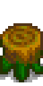
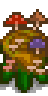
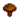
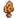

Mushroom Log
This page or section contains unmarked spoilers from update 1.6 of Stardew Valley. Players may want to avoid or be cautious toward reading this article/section. |
| Mushroom Log | |
|   | |
| Grows mushrooms every so often. The more wild trees are nearby, the better it works. | |
| Information | |
| Source | Crafting |
| Crafting | |
| Recipe Source | |
| Ingredients | |
| Produces | |
The Mushroom Log is a crafted item that produces mushrooms. The recipe is earned at foraging level 4. 4 Mushroom Logs may be rewarded as the seventh prize from the Prize Machine (33% chance). Mushroom Logs grant 5 foraging XP on harvest.
Mechanic
The Mushroom Log produces mushrooms every 4 days, rainy days will cause this to take a day less. Produces mushrooms in all seasons.
Quantity
The quantity of mushrooms produced increases with the amount of Wild Trees—that is, non-fruit trees—in the 7×7 square around the log, including immature trees. The amount of mushrooms generated, limited to between 1 and 5, is calculated by finding the number of nearby trees and divide this by two rounded down and multiplying this randomly by 1 or 2.[1] Therefore, the number of nearby trees needed to always gain the maximum amount of 5 is 10.
Type
The type of mushrooms produced depends on the type of trees nearby. The game code creates a list of possible mushrooms based on nearby trees, and then selects one at random from that list.
- First the game finds how many trees are in the 7×7 square around it, including immature trees. That number is multiplied by 3/4, rounded down, and that many mushrooms (at least one) are added to the list, randomly chosen between Purple Mushrooms (5%), Red Mushrooms (14.25%), and Common Mushrooms (80.75%).
- Then, one more mushroom is added for each mature tree. If the tree is a Oak Tree then the mushroom added will always be a Morel. The same goes for Pine Tree with Chanterelle, and for Mystic Tree with Purple Mushroom. Maple Trees have a 10% chance to give a Purple Mushroom and a 90% chance to give a Red Mushroom. If the mature tree is none of these types, the same distribution as in step 1 is used.
- Finally, a random mushroom from the second list is generated.[1]
This process makes it impossible to guarantee a single type of mushroom, as every tree added contributes not only to the chance of its own associated mushroom, but also the chance of red, common, and purple mushrooms. Due to the rounding on the number of trees in step 1, adding more trees will not always increase the chance of the associated mushroom.
A table is given below for the chance of getting each mushroom type if the Mushroom Log is surrounded by a single type of tree. Mixing trees will result in more complex distributions that need to be individually calculated. As immature trees contribute to the number of basic distribution mushrooms, but not the number of special mushrooms, these values are only accurate once all trees are fully grown.
| Mushroom Probabilities with a Single Tree Type | ||||||||||||||||||
|---|---|---|---|---|---|---|---|---|---|---|---|---|---|---|---|---|---|---|
| Number of Modifying Mature Trees |
Number of Basic Distribution Mushrooms |
% Common Mushroom  | % Red Mushroom (Not Maple Tree) |
% Purple Mushroom (Not Maple or Mystic Tree) |
% Morel  (Oak Tree) |
% Chanterelle (Pine Tree) |
% Red Mushroom (Maple Tree) |
% Purple Mushroom (Maple Tree) |
% Purple Mushroom (Mystic Tree) | |||||||||
| 0 | 1 | 80.75% | 14.25% | 5.00% | N/A | N/A | N/A | N/A | N/A | |||||||||
| 1 | 1 | 40.38% | 7.12% | 2.50% | 50.00% | 50.00% | 52.13% | 7.50% | 52.50% | |||||||||
| 2 | 1 | 26.92% | 4.75% | 1.67% | 66.67% | 66.67% | 64.75% | 8.33% | 68.33% | |||||||||
| 3 | 2 | 32.30% | 5.70% | 2.00% | 60.00% | 60.00% | 59.70% | 8.00% | 62.00% | |||||||||
| 4 | 3 | 34.61% | 6.11% | 2.14% | 57.14% | 57.14% | 57.54% | 7.86% | 59.29% | |||||||||
| 5 | 3 | 30.28% | 5.34% | 1.88% | 62.50% | 62.50% | 61.59% | 8.13% | 64.38% | |||||||||
| 6 | 4 | 32.30% | 5.70% | 2.00% | 60.00% | 60.00% | 59.70% | 8.00% | 62.00% | |||||||||
| 7 | 5 | 33.65% | 5.94% | 2.08% | 58.33% | 58.33% | 58.44% | 7.92% | 60.42% | |||||||||
| 8 | 6 | 34.61% | 6.11% | 2.14% | 57.14% | 57.14% | 57.54% | 7.86% | 59.29% | |||||||||
| 9 | 6 | 32.30% | 5.70% | 2.00% | 60.00% | 60.00% | 59.70% | 8.00% | 62.00% | |||||||||
| 10 | 7 | 33.25% | 5.87% | 2.06% | 58.82% | 58.82% | 58.81% | 7.94% | 60.88% | |||||||||
| 11 | 8 | 34.00% | 6.00% | 2.11% | 57.89% | 57.89% | 58.11% | 7.89% | 60.00% | |||||||||
| 12 | 9 | 34.61% | 6.11% | 2.14% | 57.14% | 57.14% | 57.54% | 7.86% | 59.29% | |||||||||
| 13 | 9 | 33.03% | 5.83% | 2.05% | 59.09% | 59.09% | 59.01% | 7.95% | 61.14% | |||||||||
| 14 | 10 | 33.65% | 5.94% | 2.08% | 58.33% | 58.33% | 58.44% | 7.92% | 60.42% | |||||||||
| 14 | 11 | 34.16% | 6.03% | 2.12% | 57.69% | 57.69% | 57.95% | 7.88% | 59.81% | |||||||||
| 16 | 12 | 34.61% | 6.11% | 2.14% | 57.14% | 57.14% | 57.54% | 7.86% | 59.29% | |||||||||
Quality
The quality of the mushrooms produced can vary, but is not affected by the Botanist Profession. Instead, the quality is calculated based on the number of nearby trees, including immature trees, and how many of them have moss on them. Each nearby tree is counted, with mossy trees counted twice. This number is then divided by 40 and is used as the chance for the quality to upgrade. This chance occurs repeatedly until it fails or reaches iridium quality.[1] So for example if the count is 20 then the chance is 0.5, meaning there is a 50% chance of regular quality, a 25% chance of silver quality, a 12.5% chance of gold quality, and a 12.5% chance of iridium quality. A complete table of probabilities for each quality of mushroom, depending on the amount of trees and moss, is given below, along with the expected multiplier on sell price.
| Probabilities for each Quality | |||||
|---|---|---|---|---|---|
| Tree & Moss Count | % Base quality | % Silver quality | % Gold quality | % Iridium quality | Average Price Multiplier |
| 0 | 100.00% | 0.00% | 0.00% | 0.00% | 100.00% |
| 1 | 97.50% | 2.44% | 0.06% | 0.00% | 100.64% |
| 2 | 95.00% | 4.75% | 0.24% | 0.01% | 101.32% |
| 3 | 92.50% | 6.94% | 0.52% | 0.04% | 102.04% |
| 4 | 90.00% | 9.00% | 0.90% | 0.10% | 102.80% |
| 5 | 87.50% | 10.94% | 1.37% | 0.20% | 103.61% |
| 6 | 85.00% | 12.75% | 1.91% | 0.34% | 104.48% |
| 7 | 82.50% | 14.44% | 2.53% | 0.54% | 105.41% |
| 8 | 80.00% | 16.00% | 3.20% | 0.80% | 106.40% |
| 9 | 77.50% | 17.44% | 3.92% | 1.14% | 107.46% |
| 10 | 75.00% | 18.75% | 4.69% | 1.56% | 108.59% |
| 11 | 72.50% | 19.94% | 5.48% | 2.08% | 109.81% |
| 12 | 70.00% | 21.00% | 6.30% | 2.70% | 111.10% |
| 13 | 67.50% | 21.94% | 7.13% | 3.43% | 112.48% |
| 14 | 65.00% | 22.75% | 7.96% | 4.29% | 113.96% |
| 15 | 62.50% | 23.44% | 8.79% | 5.27% | 115.53% |
| 16 | 60.00% | 24.00% | 9.60% | 6.40% | 117.20% |
| 17 | 57.50% | 24.44% | 10.39% | 7.68% | 118.98% |
| 18 | 55.00% | 24.75% | 11.14% | 9.11% | 120.87% |
| 19 | 52.50% | 24.94% | 11.85% | 10.72% | 122.87% |
| 20 | 50.00% | 25.00% | 12.50% | 12.50% | 125.00% |
| 21 | 47.50% | 24.94% | 13.09% | 14.47% | 127.25% |
| 22 | 45.00% | 24.75% | 13.61% | 16.64% | 129.63% |
| 23 | 42.50% | 24.44% | 14.05% | 19.01% | 132.15% |
| 24 | 40.00% | 24.00% | 14.40% | 21.60% | 134.80% |
| 25 | 37.50% | 23.44% | 14.65% | 24.41% | 137.60% |
| 26 | 35.00% | 22.75% | 14.79% | 27.46% | 140.54% |
| 27 | 32.50% | 21.94% | 14.81% | 30.75% | 143.64% |
| 28 | 30.00% | 21.00% | 14.70% | 34.30% | 146.90% |
| 29 | 27.50% | 19.94% | 14.45% | 38.11% | 150.32% |
| 30 | 25.00% | 18.75% | 14.06% | 42.19% | 153.91% |
| 31 | 22.50% | 17.44% | 13.51% | 46.55% | 157.66% |
| 32 | 20.00% | 16.00% | 12.80% | 51.20% | 161.60% |
| 33 | 17.50% | 14.44% | 11.91% | 56.15% | 165.72% |
| 34 | 15.00% | 12.75% | 10.84% | 61.41% | 170.02% |
| 35 | 12.50% | 10.94% | 9.57% | 66.99% | 174.51% |
| 36 | 10.00% | 9.00% | 8.10% | 72.90% | 179.20% |
| 37 | 7.50% | 6.94% | 6.42% | 79.15% | 184.09% |
| 38 | 5.00% | 4.75% | 4.51% | 85.74% | 189.18% |
| 39 | 2.50% | 2.44% | 2.38% | 92.69% | 194.48% |
| 40+ | 0.00% | 0.00% | 0.00% | 100.00% | 200.00% |
References
History
- 1.6: Introduced.